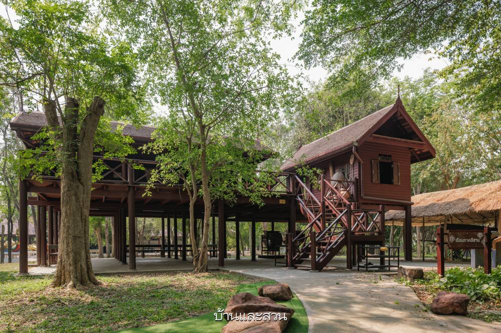
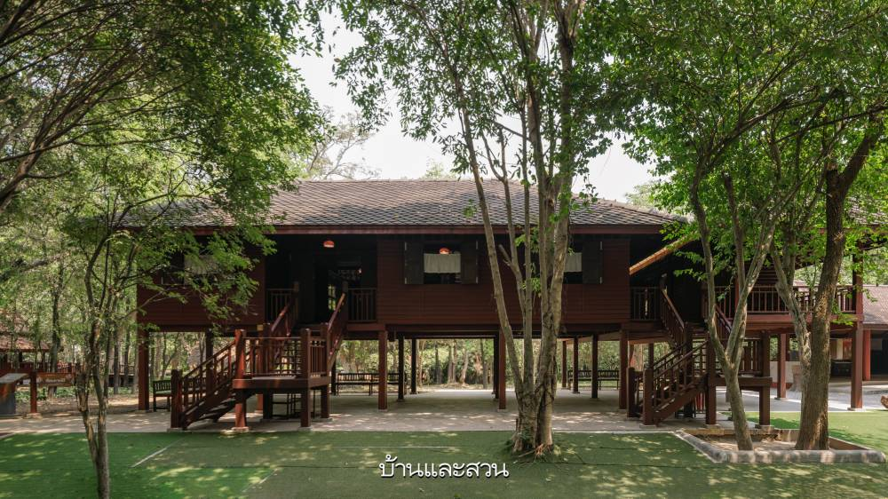

🏠 ภาคเหนือ

- เรือนกาแล สร้างด้วยไม้เนื้อแข็ง ประดับยอดจั่วด้วยไม้แกะสลัก
- ผนังปิดทึบ หน้าต่างน้อย เพื่อกันลมเย็น
- มี “ฝาไหล” เลื่อนเปิด-ปิด รับลมตามสภาพอากาศ
🏠 ภาคอีสาน

- เฮือนเกย เฮือนแฝด เฮือนโข่ง เป็นแบบหลัก
- ครัวแยกจากบ้านหลัก ลดควันและความร้อน
- หลังคาลาดชันน้อยกว่าภาคอื่น
🏠 ภาคกลาง

- มีทั้งเรือนเครื่องสับ เครื่องผูก และเครื่องก่อ
- ยกใต้ถุนสูง มีชานบ้านกว้าง
- หลังคาทรงจั่ว มีหางปลาและเหงาตกแต่ง
🏠 ภาคใต้

- หลังคาทรงปั้นหยา กันฝนและลมแรง
- ใต้ถุนสูง ใช้เก็บของและพักผ่อน
- ใช้ไม้เนื้อแข็ง มุงจาก หรือสังกะสี